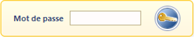
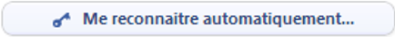
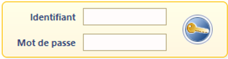

Principes
Watchdoc est un produit qui traite des informations sensibles ou parfois confidentielles. Il est donc important d'attribuer des droits d'accès propres à chaque profil d'administration.
Watchdoc permet la gestion des droits d'accès à ses différentes interfaces d'administration. En fonction des droits attribués à chaque utilisateur, ce dernier dispose d'accès à un nombre plus ou moins important d'interfaces d'administration.
A partir de la version Watchdoc 6.0.0.4843, lorsque les serveurs sont organisés en Domaine (configuration maître/esclaves), une case à cocher Global permet de répliquer les droits définis pour le serveur maître sur les autres serveurs qui en dépendent (esclaves). Cette fonction permet un gain de temps et de cohérence lors de la configuration initiale.
Le compte d'accès admistrateur (mot de passe de maintenance) possède tous les droits, même celui de voir les codes d'authentification (codes PUK, PIN) des utilisateurs.
Pour sécuriser au maximum l'outil, il est conseillé de limiter l'utilisation du compte d'administration, de créer un profil Opérateur et d'en configurer scrupuleusement les droits.
Lorsque des droits d'un rôle, d'un groupe d'utilisateurs ou d'un utilisateur sont modifiés en cours d'utilisation, tous les utilisateurs concernés par la modification sont alors instantanément déconnectés. Un message informe l'utilisateur qu'il n'est pas autorisé à faire ce qu'il souhaitait faire ("Vous n'êtes pas autorisé à accéder à cette section", par exemple).
Modes d'authentification
Watchdoc propose deux modes d'accès à l'interface d'administration :
-
accès en mode maintenance : cet accès est dédié à l'administrateur système qui dispose de droits d'administration sur l'ensemble des fonctionnalités de Watchdoc. Son mot de passe est défini lors de l'intégration du produit.

;
-
accès en mode Windows® : ce mode permet l'authentification à partir du compte Windows® de l'utilisateur
-
soit récupéré par le système, grâce au bouton

; -
soit saisi par l'utilisateur dans les champs Identifiant et Mot de passe :

-
Une fois authentifié, l'utilisateur accède aux interfaces d'administration pour lesquelles des droits d'accès lui ont été accordés.
Etapes
Avant de configurer les droits d'administration de Watchdoc, il convient d'avoir configuré les groupes d'utilisateurs dans l'annuaire LDAP.
Nous vous recommandons de créer dans votre annuaire LDAP les groupes correspondant aux Droits spéciaux de Watchdoc.
Ces groupes peuvent ainsi être associés aux groupes Watchdoc et leur composition peut varier (via l'annuaire LDAP) sans nécessiter de modification dans Watchdoc.
Pour configurer les droits d'administration dans Watchdoc, vous devez :
-
obligatoirement attribuer le Droit spécial Opérateurs Watchdoc à chaque groupe d'utilisateurs ou utilisateurs ayant le droit d'accéder à l'interface d'administration Watchdoc ;
-
attribuer le droit Administration du système au groupe d'utilisateurs ou utilisateurs autorisés à administrer globalement Watchdoc et attribuer à ce(s) groupe(s) d'utilisateurs le droit Opérateurs Watchdoc.
Les utilisateurs disposant du droit Administration du système héritent de tous les rôles figurant dans la liste Rôles d'administration, hormis celui de Prévisualisation des documents qui, pour être activé, doit être attribué à un groupe d'utilisateurs spécifique;
-
pour chaque Rôle d'administrationfigurant dans la liste, précisez le groupe d'utilisateurs ou les utilisateurs auxquels il est attribué.
Exemple
Exemple de gestion des droits dans Watchdoc :
-
les membres du groupe LDAP Administrateurs impression ont tous les droits d'administration dans Watchdoc, y compris le droit de prévisualiser les documents imprimés par les utilisateurs ;
-
les membres du groupe LDAP "Responsable des files d'impression" sont autorisés à gérer les files d'impression et les documents ;
-
les membres du groupe LDAP "Responsable des utilisateurs (impression)" sont autorisés à gérer les utilisateurs ainsi que leurs PMV ;
-
les membres du groupe LDAP "Responsable des tarifs (impression)" sont autorisés à gérer les tarifs d'impression.
Pour obtenir ce résultat, les Droits d'accès Watchdoc doivent être paramétrés comme suit :
-
Droits spéciaux
-
Opérateurs Watchdoc
-
ADM_IMPR = groupe "Administrateurs impression" de annuaire LDAP ;
-
RESP_FILES_IMPR = groupe "Responsables des files d'impression" de annuaire LDAP ;
-
RESP_UTIL_IMPR = groupe "Responsables des utilisateurs (impression)" de annuaire LDAP ;
-
RESP_TARIF_IMPR = groupe "Responsables des tarifs (impression)"
-
Administrateurs du système : ADM_PRINT = groupe "Administrateurs impression" de annuaire LDAP.
-
-
Rôles d'administration
-
Gestion des files : RESP_FILES_IMPR= groupe "Responsable des files d'impression" de annuaire LDAP ;
-
Gestion des PMV : RESP_UTIL_IMPR = groupe "Responsable des utilisateurs (impression)" de annuaire LDAP
-
Gestion des tarifs : RESP_TARIFS_IMPR= groupe "Responsable des tarifs d'impression" de annuaire LDAP
-
Gestion des utilisateurs : RESP_UTIL_IMPR = groupe "Responsable des utilisateurs (impression)" de annuaire LDAP
-
Prévisualisation des documents : ADM_IMPR = groupe "Administrateurs impression" de annuaire LDAP.
-